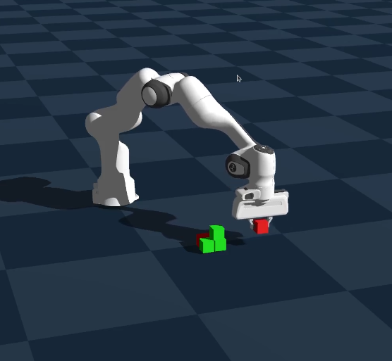
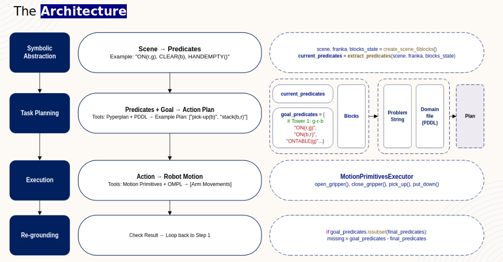

State estimation
Geometric thresholds classify blocks as stacked, clear, on the table, or held. The implementation uses a 40 mm block size, 15 mm vertical tolerance, and 20 mm horizontal alignment tolerance.
01 / Autonomy · Task and Motion Planning
A closed-loop manipulation framework that combines symbolic PDDL reasoning with collision-free OMPL trajectories, enabling a Franka Panda robot to build increasingly complex block structures in the Genesis simulator.

The problem
A task planner can decide that a red block belongs on a green block, but it cannot determine whether the robot can reach that pose without a collision. A motion planner can find a safe joint-space path, but it does not know which block should move next or what the finished structure should look like.
Our goal was to connect both levels of reasoning in one system. Starting from noisy block poses, the robot had to understand the scene, generate an action plan, ground each action into feasible arm motion, execute it in physics, and check whether the world still matched its assumptions.
Architecture
The system uses four connected stages. Re-grounding closes the loop: after the robot acts, it observes the scene again instead of assuming execution succeeded.
Continuous block and gripper poses are converted into logical predicates: ON, ONTABLE, CLEAR, HOLDING, and HANDEMPTY.
The current predicates and desired goal are written into a PDDL problem. Pyperplan returns grounded actions such as pick-up, unstack, stack, and put-down.
Each symbolic action becomes a robot primitive. Inverse kinematics produces target configurations and OMPL’s RRT-Connect searches for a collision-free joint-space trajectory.
After physics settles, the predicates are extracted again. A failed grasp, shifted block, or collapsed tower updates the next plan rather than silently corrupting execution.

Implementation
Geometric thresholds classify blocks as stacked, clear, on the table, or held. The implementation uses a 40 mm block size, 15 mm vertical tolerance, and 20 mm horizontal alignment tolerance.
The OMPL bridge derives bounds from the robot’s joint limits and validates every sampled state. Contact between the fingers and the currently held object is allowed; unintended robot, object, and environment collisions are rejected.
Pick and place behaviors sequence pre-grasp motion, gripper control, vertical approach, lifting, transport, release, and retreat. Separating horizontal motion, wrist rotation, and vertical placement improves stability.
Planning failures report out-of-bounds joints and colliding links. Adapter and type-conversion layers keep Genesis, NumPy, PyTorch, and the C++ OMPL bindings interoperable.
My contribution
I led the implementation of Goal 3: autonomously constructing the tallest stable tower from ten scattered blocks. The strategy selected blocks incrementally, verified stability after every placement, and re-planned from newly extracted predicates when a block fell.
I also played a central role in system debugging and troubleshooting, particularly joint-limit violations, collision-detection failures, error handling, and diagnostic tooling. The architecture, symbolic abstraction, OMPL integration, documentation, and testing were collaborative team efforts.
Experiments
Rearranged six blocks from scattered and pre-stacked scenes into two specified three-block towers.
Built an ordered five-block tower while placing the unused cyan block safely to the side.
Reached seven blocks before the eighth placement toppled the structure, triggering autonomous recovery attempts.
Introduced deterministic base and top slots for a ten-block bridged structure. The marginal support geometry exposed sensitivity to release impulses and simulator noise.
Extended PDDL with directional X/Y adjacency predicates, constructed a repeatable 2×2 base, and stacked the remaining blocks while preserving spatial relationships.
The outcome
The project demonstrated a complete path from continuous perception to symbolic reasoning, collision-free manipulation, verification, and recovery—not just a scripted pick-and-place demo.
Team & resources
Sahil Gajera · Ashish Sukumar · Anirudh Nallawar · Rajdeep Banerjee